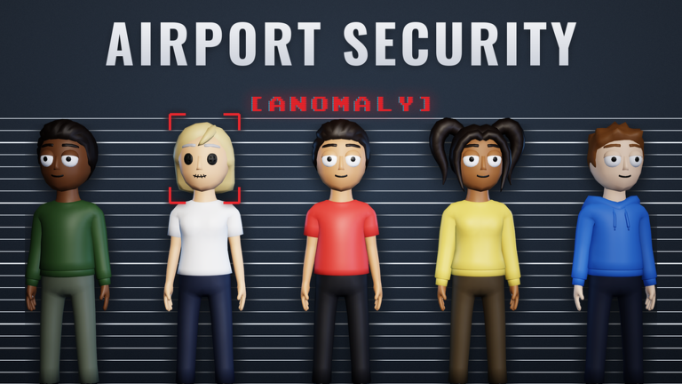

✈️ Airport Security (Anomaly): Halloween PT. 2 sâmbătă, 31 oct, la 22:00

✈️ Airport Security (Anomaly) are un event oficial nou: „HALLOWEEN PT. 2”, cu subtitlul „DON'T MISS OUT!”. Îl publică grupul Hollow Creek Airport.
📅 Când (ora României): sâmbătă, 31 oct, la 22:00 → vineri, 6 nov, la 04:00
✅ Descrierea eventului de pe pagina oficială e goală. Imaginea e logo-ul „Hollow Creek Airport”, nu o captură din update.
✅ Am citit în API-ul public Roblox (27 oct, ~00:53 RO): 7.180 de jucători online și 3.525.193 de vizite pe „[🎃] Airport Security (Anomaly) ✈️”.
❓ Ce NU știm:
- Ce aduce Part 2 (hărți, monștri, iteme sau doar decor)
- Cum se leagă de Part 1
- De ce eventul ține aproape o săptămână
🔗 Pagina oficială a eventului: https://www.roblox.com/events/5731687937863713401
Follow pe TikTok @vexu_online și abonare pe YouTube la VEXU Online. Follow = Au ce bile! 💥